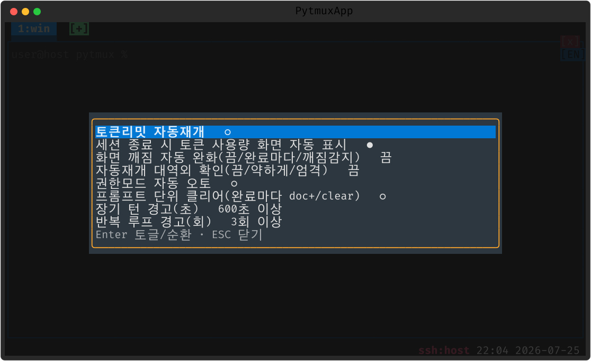
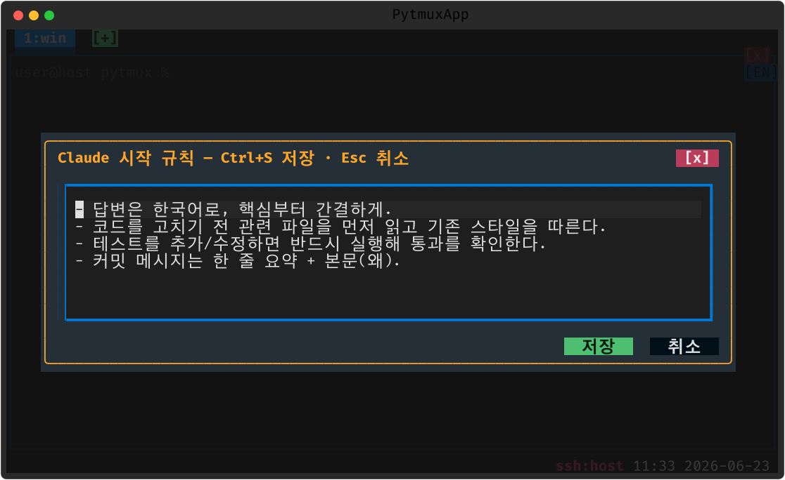

claude-code
Claude Code 통합의 중심 플러그인입니다. 패널 속 Claude 세션을 감지해 상태줄 배지·토큰 회계·자동 개입(리밋 자동 재개, 전송 에러 재시도)·시작 규칙 주입까지 담당합니다.
무엇을 하나
Claude 가 도는 패널을 자동 감지해 상태(◐ 작업중/○ 대기) 탭 글리프와 상태줄 토큰 배지를 붙입니다. 토큰 사용량은 화면 스크랩이 아니라 ~/.claude/*.jsonl 트랜스크립트 회계가 권위 출처라 cache_read 까지 정확합니다. 토큰 리밋에 걸리면 리셋 시각에 맞춰 자동 재개하고, 일시 전송 에러(API error·rate limit)는 1분 뒤 '계속'을 자동 주입합니다(auto-retry).


주요 명령
| 명령 | 설명 |
|---|---|
token-saver | Claude 설정 팝업 — 자동재개·세션종료 토큰화면·권한 오토모드·프롬프트 단위 클리어·장기턴/반복 경고 (별칭 claude-settings) |
token-log | 토큰 사용량 팝업 — 기간(시/일/주/월)·계정·세션 뷰 + 실측 한도·5h창 (상태줄 토큰 배지 클릭) |
usage-panel | /usage 한도 막대 그래프 팝업 (별칭 limits) |
auto-resume | 토큰 리밋 자동 재개 on/off |
claude-rules | 시작 규칙 편집 — 새 세션//clear 후 첫 프롬프트에 자동 주입 |
model | 모델·컨텍스트 변경 팝업 (상태줄 모델 배지 클릭) |
prompt-clear | 프롬프트 단위 클리어 모드 — 완료마다 문서화+/clear |
auto-retry | 전송 에러 시 1분 뒤 '계속' 자동 주입 on/off |
claude-auto-mode | idle 시 권한모드 자동 오토모드 전환 on/off |
auto-launch | 새 Claude 세션에 /rc+권한모드 1회 자동 적용 on/off |
명령은 ESC → : 프롬프트에서 실행합니다. 토글류는 인자 없이 실행하면 선택 팝업이 뜹니다.
화면





메모
원격 페더레이션 패널에서도 동작합니다(자동재개 토글·토큰 팝업은 원격 서버로 릴레이). 토큰 DB 는 .tokens.db(SQLite), 실측 한도는 그림자 /usage 질의로 갱신합니다. 세부 항목은 Claude Code 연동·토큰 사용량 챕터 참고.
끄기 · 제거
:plugins 관리 팝업에서 끄거나(가역), pytmuxlib/plugins/claude-code/
디렉토리를 지우면(delete-to-disable) 명령·자동완성·메뉴 어디에도 나타나지 않고 조용히
사라집니다. 코어는 영향받지 않습니다. ← 플러그인 개요